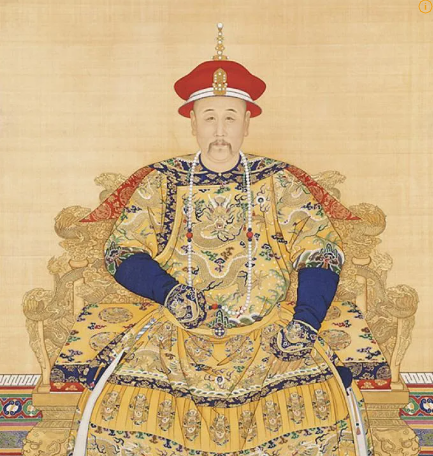
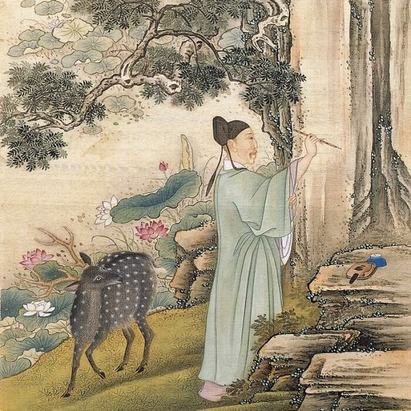
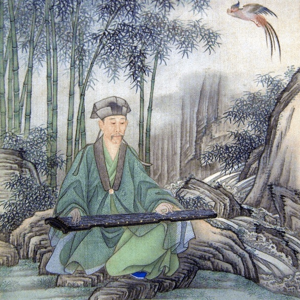
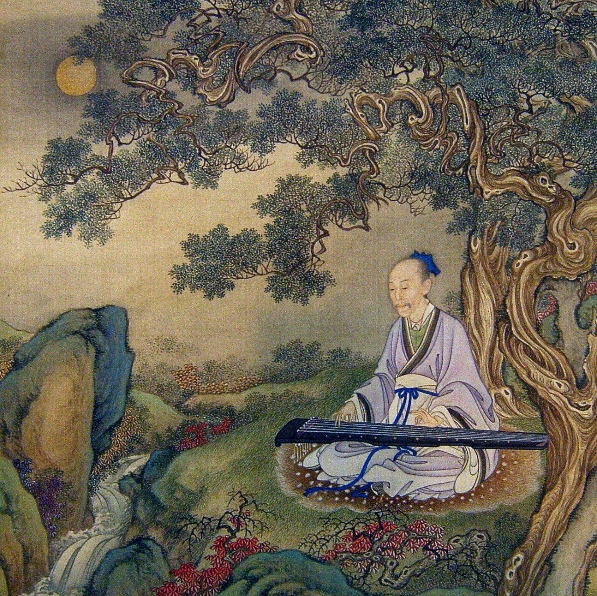
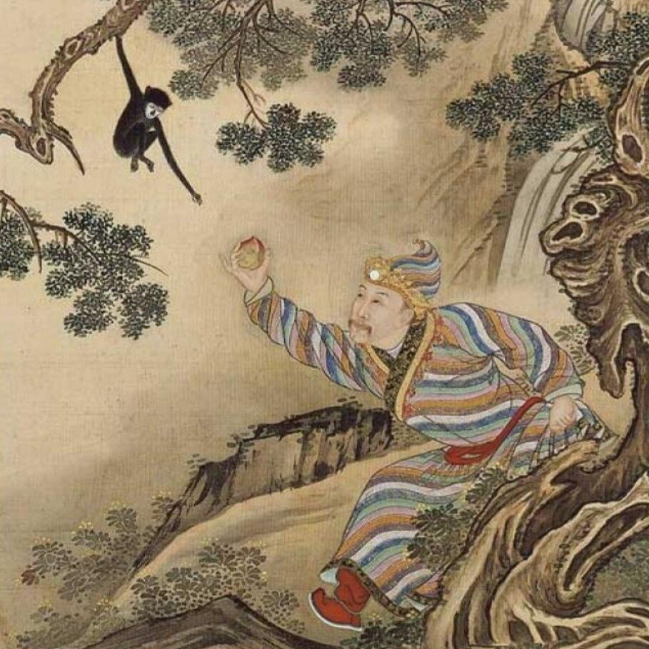
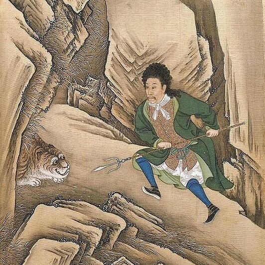
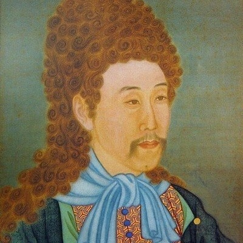
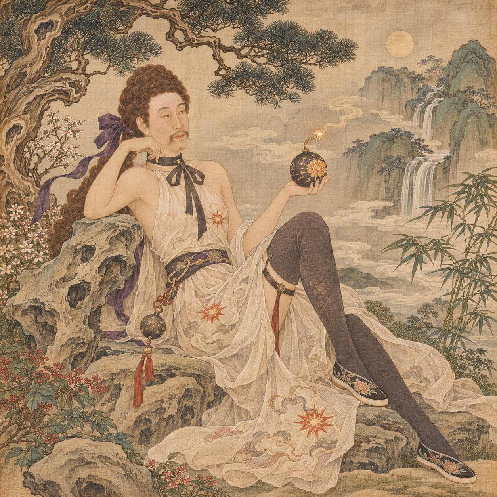
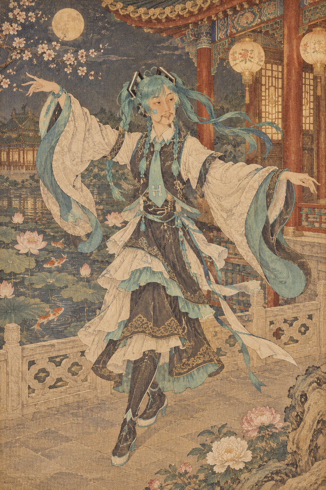
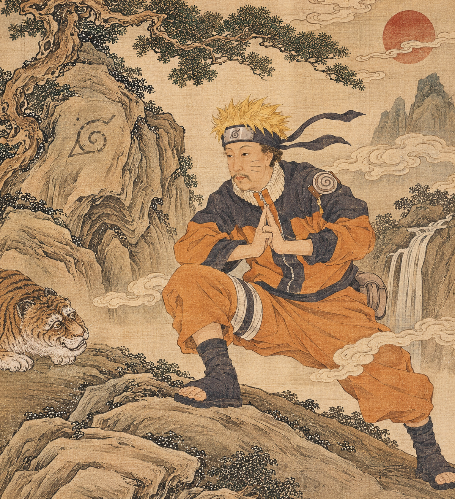

청나라 5대 황제였던 '옹정제'
강희제 - 옹정제 - 건륭제로 이어지는 청나라 황금시기의 황제로,
옹정제는 아버지였던 강희제가 시작했던 청나라의 전성기를 이은 황제였다.
옹정제 엄청난 워커홀릭으로 유명한데, 청나라에 부를 쌓고 부정부패를 때려잡으며 중앙집권제 강화등에 힘을 썻으며,
재위기간은 13년으로 짧은데 이 이유가 압도적인 업무량으로 인한 '과로사'라는 예상이 있을정도.
전성기의 청나라 황제 앞으로 오는 하루 수백통의 서신을 하나하나 다 답변을 했으며,
신하들에게 '월급만 타가는 버러지새끼', '제대로 하는 거 하나 없는 새끼', '멍청한 소인배새끼' 등 독설도 아끼지 않았다.
아무튼 당시 세계에서 제일 강력했던 청나라의 전성기 한복판에 있던 황제에게는 은밀한 취미가 있었는데...
그건 바로 코스프레 였다 (??????)

'선비' 코스프레 중이신 황제폐하


'속세를 떠나 초야에서 지내는 선비' 코스프레 중이신 황제폐하
'산신령' 코스프레 중이신 황제폐하

'아라비아 귀족' 코스프레를 한 황제폐하


'서양 귀족 코스프레'를 하신 황제폐하
그렇다. 청나라의 황제 옹정제는 과도한 업무로 인한 스트레스를 코스프레로 풀고는 했는데,
어디선가 가발, 복장, 소품까지 준비하고서는 화가에게 자신의 모습을 그리라고 명하고는 하셨다.
아마 옹정제가 21세기 사람이였다면 우리는 할로윈 또는 코믹페스티벌에서

'레제 코스프레'를 한 황제 폐하

'하츠메 미쿠' 코스프레를 한 황제폐하

'나루토' 코스프레를 한 황제폐하
등등을 볼수 있지 않았을까.
레제가 왜 뽀글머리야 고종좀 지키쇼 황제폐하